Onglet Plan de dosage
Quand vous cliquez sur
le bouton "Étape suivante" dans l'onglet « Info client », un écran similaire à
celui ci-après s'affiche. L'onglet Plan de dosage
contient toutes les informations et variables pertinentes pour le calcul d'une dose et d'un dosage de fumigant.
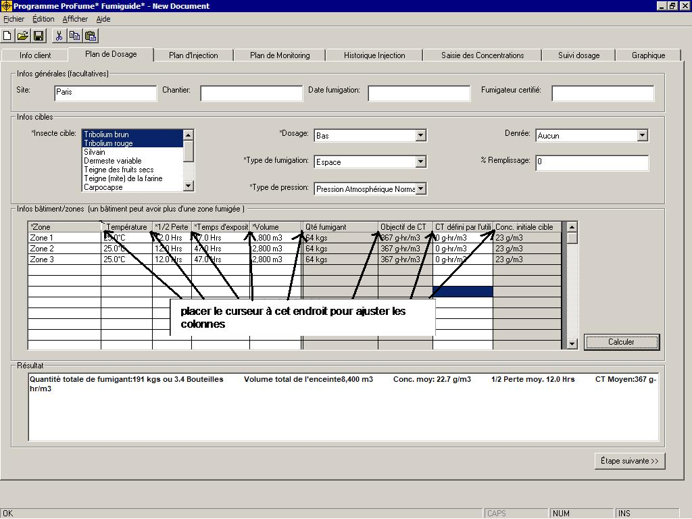
Note : La largeur de toute colonne dans le Fumiguide ProFume peut être paramétrée, en plaçant le curseur à l'écran sur la ligne grise séparant les titres des colonnes et en réduisant/augmentant la largeur. Notez également les zones grisées de tout onglet quand des résultats de calculs sont affichés. Tout champ ayant un fond blanc permet d'effectuer des entrées ou des sélections de listes.
Tout
champ précédé d'un caractère "*" nécessite une saisie. Les champs suivants
nécessitent une saisie pour effectuer un calcul de dosage. Leurs définitions respectives sont répertoriées après ces termes.
*Insecte cible :
l'insecte ou le groupe d'insectes à contrôler grâce à la fumigation. Plusieurs insectes peuvent être sélectionnés, en cliquant sur les insectes dans le menu. Si l'insecte à contrôler n'est pas répertorié par nom, sélectionnez "Autre coléoptère" ou "Autre lépidoptère" dans le menu. Tout insecte peut être désélectionné en cliquant dessus.
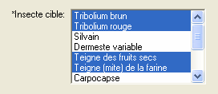
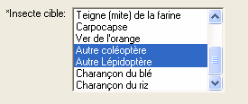
*Dosage: : Deux dosages sont disponibles dans le Fumiguide ProFume en rapport avec le niveau de contrôle .
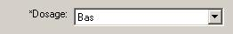
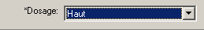
L'option "Dosage haut" permet un contrôle des œufs, larves pupes et adultes. Ce niveau élevé de contrôle est adapté pour des fumigations en situation de forte pression parasitaire.
L'option "Dosage haut" permet un contrôle des œufs, larves pupes et adultes. Ce niveau élevé de contrôle est adapté pour des fumigations en situation de forte pression parasitaire.
NOTE : après avoir calculé le dosage dans l'une ou l'autre option de dosage, le fumigateur peut recommander un dosage "à la carte" entre le "Dosage bas" et un CT de 1500 qui répondra aux attentes du client. Ceci peut être accompli en entrant le dosage désiré dans la colonne « CT défini par l'utilisateur »
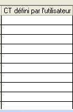
SVP noter que la valeur de "CT défini par l'utilisateur" doit être supérieure à 36 et ne pas dépasser 1500
La Fumigation de Précision se définit comme l'optimisation de l'utilisation du fumigant pour une efficacité maximum et un risque minimum. La Fumigation de Précision se réalise grâce à l’intégration des tous les facteurs influant l’efficacité tels que la biologie des insectes, la température, le temps d’exposition, des techniques améliorées de calfeutrage dans la conduite de la fumigation.
*Denrée: aliment dans l'espace fumigé. Plusieurs choix de denrées sont disponibles dans la liste. Cependant, vous ne pouvez sélectionner qu'une seule denrée dans la liste.
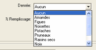
*Type de fumigation: Il y a deux types de fumigation: « Espace » ou « Denrée ».
Sélectionner “Espace" si vous ciblez essentiellement des insectes infestant les bâtiments ou les machines (par exemple moulins, industries agro-alimentaires, entrepôts),
"Denrée" si vous ciblez essentiellement des insectes à l'intérieur de denrées (par exemple grain dans un silo).
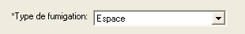
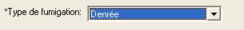
% remplissage : pourcentage estimé d'espace fumigé rempli par la denrée. Saisissez un nombre entier entre 0-100.
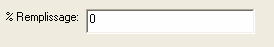
*Type de pression : Deux options de
pression de fumigation sont disponibles dans le Fumiguide ProFume: Atmosphérique normal ou Sous vide.
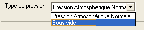
Nom de zone est une section d'une enceinte
ou d'un bâtiment ou l'ensemble du bâtiment. Il peut s'agir d'un étage, d'une pièce ou d'une section de l'enceinte. Chaque zone peut avoir une température, une 1/2 Perte estimée et un volume différents. Plusieurs zones peuvent être saisies et des dosages individuels seront listés pour chaque zone répertoriée.
Enceinte
: Bâtiment indépendant, installation de stockage, chambre, etc.
Dosage : Indique
le nombre de g-h/m3 ou oz-h/MCF accumulés pendant la période d'exposition. Le dosage est interchangeable avec CT. Les types de dosage incluent : Dosage cible, Prévu et Effectif.
Dose : la concentration/volume (g/ m3
ou oz/MCF) de fumigant introduit dans l'espace de fumigation.
*Température : Degré (°F ou °C) dans le site d'activité des nuisibles dans le bâtiment, les machines ou les denrées. Dans le cas de fumigations de chambre, la température interne des denrées à fumiger doit être utilisée. Vous pouvez saisir toute température entre 4,4 °C et 65,5°C.
*1/2 Perte estimée : Temps nécessaire pour
perdre la moitié de la concentration du fumigant, mesuré en heures. La 1/2 Perte estimée doit se situer entre 1.00 et 1000.00 heures.
*Durée d'exposition : Quantité de temps
(période d'exposition) pendant laquelle un fumigant est confiné dans une
enceinte pour éliminer l'insecte cible. Le temps d'exposition prévu doit se situer entre 1.00 et 168.00 heures. Lors du monitoring de concentrations de fumigant, le temps d'exposition devrait être identique dans les onglets Plan de dosage, Saisie des concentrations et Suivi dosage. Le temps d'exposition peut varier sur différentes zones lors de l'évaluation de scénarios de fumigation, mais doit être identique lors du monitoring d'un chantier. Si des zones de temps d'exposition différent sont nécessaires, ouvrez un second fichier de Fumiguide et lancez un nouveau chantier. Plusieurs fichiers Fumiguide peuvent être ouverts simultanément.
*Volume
de surface : mesure de l'espace intérieur exprimée en mètres cube (ou en pieds cubes). Le volume de la zone doit être entre 1 et 265.000 mètres cubes.
Veuillez noter dans
l'exemple ci-après que l'enceinte comporte 3 zones (Premier, Second et Troisième Etages) avec un Temps d'exposition identique, chacune ayant une combinaison température, volumes et 1/2 Perte estimées spécifique.
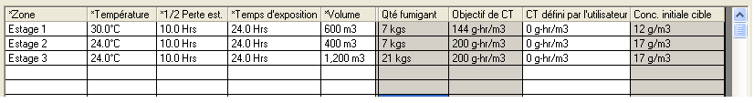
Une fois
tous les champs requis saisis correctement, cliquez sur le bouton "Calculer" pour voir la dose et les dosages par zone dans la case "Résultats".
Calculer Dosage : Une fois la saisie de
données (fond blanc) pour une rangée dans le tableau Enceinte/Zone terminée, sélectionnez le bouton "Calculer" pour calculer les données Quantité de fumigant requise, Objectif de CT et Concentration initiale cible. Les résultats pour l'ensemble de l'enceinte s'affichent dans la case Résultats.
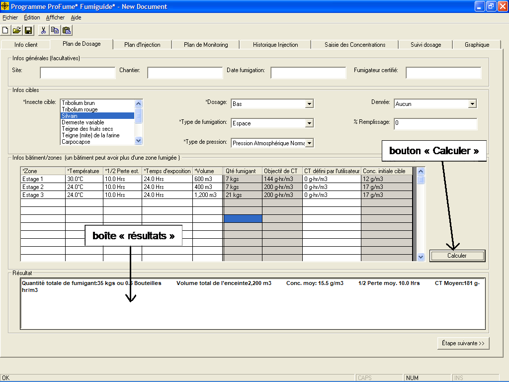
CT Défini par l'utilisateur
Après avoir calculé le dosage dans l'une ou l'autre option de dosage, le fumigateur peut recommander un dosage "à la carte" entre le "Dosage bas" et un CT de 1500 qui répondra aux attentes du client. Ceci peut être accompli en entrant le dosage désiré dans la colonne « CT défini par l'utilisateur » puis en appuyant sur le bouton « calculer » .
Veuillez noter que la valeur de « CT défini par l'utilisateur » ne peut être inférieure au « Dosage bas » pour l'insecte cible ni dépasser 1500 de CT.
Messages d'avertissement dans l'onglet Plan de dosage
Si vous saisissez un nombre ou une valeur hors des plages acceptables référencées auparavant, une case de message d'avertissement telle que celle-ci apparaît :
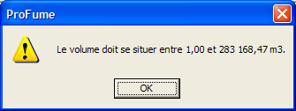
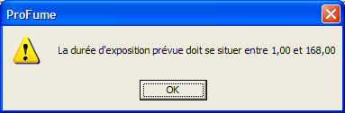
D'autres avertissements généraux de l'onglet Plan de dosage :
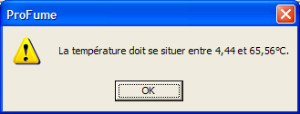
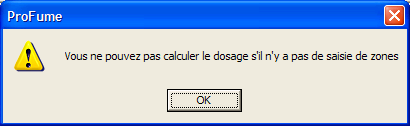
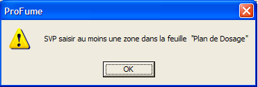
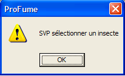
Si vous
saisissez un nombre dans les plages acceptables, mais que le contrôle ne sera
pas optimal, des messages d'avertissement s'affichent en rouge
dans la case Résultats. La ligne de dosage de zone dans Infos
Enceinte/Zone sera aussi affichée en surbrillance rouge .
Message d'avertissement quand la température est sous
la plage de calcul.
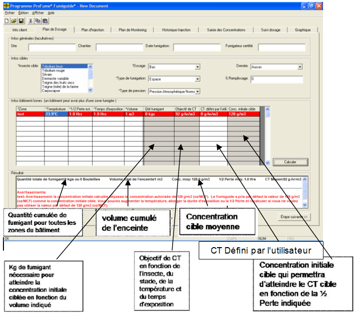